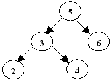
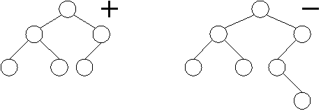
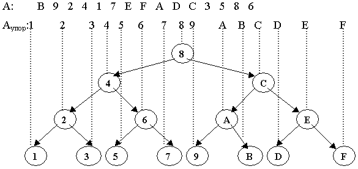

Глава 2 Деревья поиска
1 Поиск в дереве
Двоичные деревья часто употребляются для представления множества данных, среди которых идет поиск элементов по уникальному ключу. Будем считать, что
- часть данных, хранящихся в каждой вершине дерева, является ключом для поиска;
- для всех ключей определены операции сравнения <, >, =;
- в дереве нет элементов с одинаковыми ключами.
Двоичное дерево называется деревом поиска, если ключ в каждой его вершине больше ключа любой вершины в левом поддереве и меньше ключа любой вершины в правом поддереве. Пример такого дерева приведен на рисунке.

Рисунок 3 - Дерево поиска
Чтобы определить является ли двоичное дерево деревом поиска приведем описание на псевдокоде следующей функции. Функция возвращает значение ИСТИНА в случае, если дерево является деревом поиска, и значение ЛОЖЬ в противном случае.
Алгоритм на псевдокоде
Дерево поиска(p: pVertex)
Дерево поиска = ИСТИНА
IF(p  NIL и ((p
NIL и ((p Left NIL и (pData
Left NIL и (pData pLeftData или Дерево поиска (pLeft))) или (рRight NIL
и (pData
pLeftData или Дерево поиска (pLeft))) или (рRight NIL
и (pData
 p RightData
или не Дерево поиска (pRight)))))
p RightData
или не Дерево поиска (pRight)))))
Дерево поиска := ЛОЖЬ
FI
В основном деревья поиска используются для
организации быстрого и удобного поиска элемента с заданным ключом во
множестве данных, которое динамически изменяется. Приведенная ниже
процедура поиска элемента в дереве поиска возвращает указатель на
вершину с заданным ключом, в противном случае возвращаемое значение
равно пустому указателю.
Алгоритм на псевдокоде
Поиск вершины с ключом Х
p: = Root
DO(p NIL)
IF(pData < x) p:= pRight
ELSEIF (pData >x) p: = pLeft
ELSE
OD { pData = x }
OD
IF (p NIL) <вершина найдена>
ELSE <вершина не найдена>
OD Нетрудно видеть, что максимальное количество сравнений при поиске равно Сmax = 2h, где h высота дерева.
2 Идеально сбалансированное дерево поиска
Двоичное дерево называется идеально сбалансированным (ИСД), если для каждой его вершины размеры левого и правого поддеревьев отличаются не более чем на 1.
На рисунке приведены примеры деревьев, одно из которых является идеально сбалансированным, а другое - нет.

Рисунок 4 - Примеры ИСД и неИСД
Отметим некоторые свойства идеально сбалансированного дерева.
Свойство 1. Высота ИСД с n вершинами минимальна и равна
hИСД(n) = hmin (n) =[log(n+1)].
Свойство 2. Если дерево идеально сбалансировано, то все его поддеревья также идеально сбалансированы.
Задача построения идеально сбалансированного дерева поиска из элементов массива А = (а1, а2, ... , аn) решается в два этапа:
Сортировка массива А.
В качестве корня дерева возьмем средний элемент отсортированного массива, из меньших элементов массива строим левое поддерево, из больших - правое поддерево. Далее процесс построения продолжается до тех пор, пока левое или правое поддерево не станет пустым.
Пример. Построить ИСДП из элементов массива А. Пусть n = 16, а элементы массива это числа в 16-ричной системе счисления.
А

Рисунок 5 - Построение ИСДП
Приведем на псевдокоде алгоритм построения ИСДП. Функция ИСДП (L, R) возвращает указатель на построенное дерево, где L, R - левая и правая границы той части массива, из элементов которой строится дерево.
Алгоритм на псевдокоде
ИСДП(L, R)
IF (L > R) ИСДП:=NIL
ELSE
m : = [(L+R) / 2]
<Выделяем память для p>
p Data : = A[m]
p Left : = ИСДП ( L, m-1)
p Right : = ИСДП ( m+1, R)
ИСДП:= p
FI
Для идеально сбалансированного дерева Сmax = 2[log(n+1)]. Если считать, что поиск любой вершины происходит одинаково часто, то ИСДП обеспечивает минимальное среднее время поиска. К существенным недостаткам ИСДП можно отнести то, что при добавлении нового элемента к множеству данных необходимо строить заново ИСДП.
Контрольные вопросы
- Дайте определение двоичного дерева поиска.
- Что такое идеально сбалансированное дерево поиска?
- Какова высота ИСДП?
- Каким образом строится ИДСП?